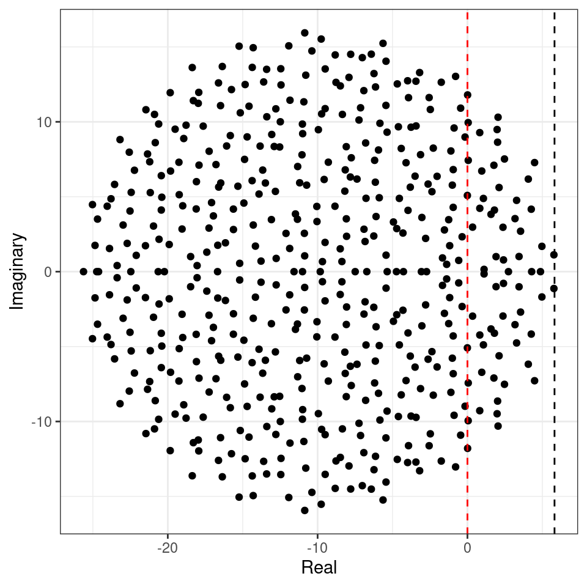
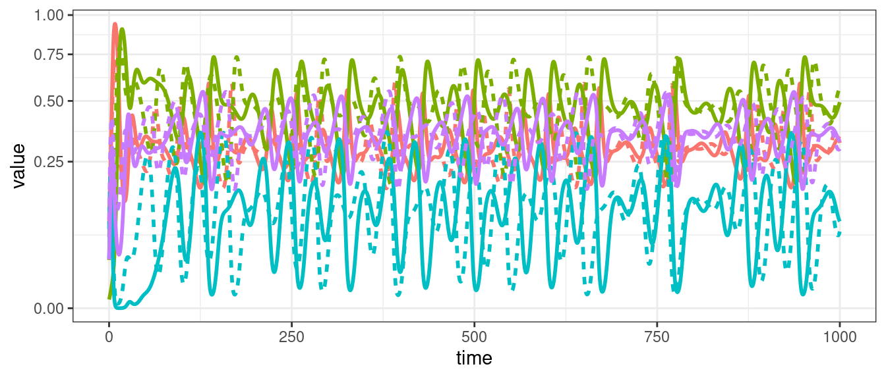
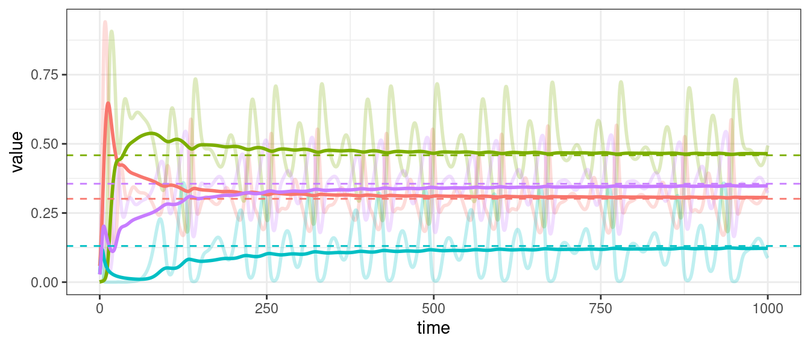

Lecture 4 Stability of large ecological communities
Lesson plan:
- We introduce the so-called diversity-stability debate, by discussing the seminal contributions of MacArthur (1955) and May (1972).
- We show how the celebrated May’s stability criterion can be derived using elementary results from random matrix theory.
- We extend May’s results to the case in which interactions between the species are correlated.
- We discuss a few tools from random matrix theory that are useful for ecology.
4.1 Complexity and stability
Key paper: MacArthur (1955)
In 1955, MacArthur used an information-theoretic argument to suggest more speciose communities would be more “stable”: having a food web with many species would open several “channels” for energy to flow from resources to consumers, such that if a channel were to go dry, another channel could take its place.
Key paper: May (1972)
This idea was challenged by May, who showed that, all other things being equal, larger communities would be less likely to be dynamically stable. This paper started the so-called “diversity-stability” debate that populates the literature to this day.
Key paper: McCann (2000)
In this review, McCann summarizes the development of the diversity-stability debate over the span of three decades.
As we have seen before, an equilibrium \(x^\star\) is stable if the community matrix for the equilibrium has all eigenvalues with negative real part. For a Generalized Lotka-Volterra model, to determine the equilibrium and its stability, we would need to specify all the growth rates (\(r\), \(n\) values), as well as the matrix of interactions (\(A\), \(n^2\) values). This is impractical to do for large systems (though we will try this out later). But can something quite general be said about the limit in which many species are in the community?
4.2 The stability of random ecosystems
History: Robert M. May (1936-2020)
Born and educated in Sidney, May received a PhD in theoretical physics from the University of Sidney in 1959. Having started his career in the physics of super-conductivity, May became interested in ecology. When visiting Princeton during his stay at the Institute for Advanced Studies, he met MacArthur, and decided to change fields.
He ended up changing the field of ecology, with an incredible number of contributions on population dynamics and chaos (see key papers in preceding lectures), the dynamics of infectious diseases (with Roy Anderson, Anderson and May (1992)), evolutionary game theory (Nowak and May (1992)), the estimation of the number of species on Earth (May (1988)), bibliometrics (May (1997)), and even banking (by modeling systemic risks, Haldane and May (2011)). He succeeded MacArthur at Princeton, and concluded his career in England (University of Oxford).
He won a large number of prizes, and was created a life peer (Lord May, Baron of Oxford). He served as president of the Royal Society and as Chief Scientific Adviser to the government.
May (1972) attempted to answer this question by considering a random community matrix. In a GLV system, the diagonal elements \(M_{ii} = A_{ii} x_i^\star\) are influenced by self-regulation (i.e., as in a carrying capacity), while the off-diagonal elements \(M_{ij} = A_{ij} x_i^\star\) model the effect of species \(j\) on the equilibrium of species \(i\). May considered the following algorithm to build a random community matrix. Take a large community, resting at an unspecified, feasible equilibrium; we build the community matrix by setting:
- \(M_{ij} = 0\) with probability \((1-C)\); with probability \(C\) we draw \(M_{ij}\) from a distribution with mean zero and variance \(\sigma^2\). \(C\) is the proportion of realized connections, termed the “connectance” of the system.
- the diagonal elements are set to \(-d\), modeling self-regulation.
May did not specify the distribution from which one would draw the nonzero interactions (more on this later). For the moment, let’s assume it’s a Normal distribution with mean zero and variance \(\sigma^2\).
Note that the average of the eigenvalues of a matrix \(A\) is given by the average of its diagonal elements \(\frac{1}{n}\sum_i \lambda_i = \frac{1}{n} \text{Tr}(A) = \frac{1}{n} \sum_i A_{ii}\). As such, if \(A = dI + B\), the eigenvalues of \(A\) will be those of \(B\) shifted by \(d\).
We want to determine whether the equilibrium will be stable, given \(n\), \(C\), \(d\) and \(\sigma^2\). To do so, we need to find the location of the “rightmost” eigenvalue of \(M\). For example, let’s plot the eigenvalues of a large matrix (\(500 \times 500\), the red-dashed line marks the location of zero on the x axis):

The eigenvalues fall into an almost perfect circle! Turns out, that this is the behavior we should expect, as stated by the so-called “Circular Law”, one of the most beautiful results in random matrix theory.
Circular law: Take a non-symmetric, \(n \times n\) random matrix in which all coefficients \(X_{ij}\) are i.i.d. random variables with \(\mathbb E[X_{ij}] = 0\) and \(\mathbb E[X_{ij}^2] = 1\). Then, as \(n \to \infty\), the e.s.d. of \({X} / \sqrt{n}\) converges to the circular law:
\[ \mu(\lambda) = \begin{cases} \frac{1}{\pi} \; \; \; \text{if} \; (\text{Re}(\lambda))^2 + (\text{Im}(\lambda))^2 \leq 1\\ 0 \; \; \;\text{ otherwise}. \end{cases} \]
This result can be used to calculate the radius of the eigenvalue distribution of the matrices studied by May: when the off-diagonal coefficients \(M_{ij}\) are 0 with probability \(1-C\) and are sampled independently from a distribution with mean \(0\) and variance \(\sigma^2\) with probability \(C\), we have that \(\mathbb E[M_{ij}] = 0\) and \(\mathbb E[M_{ij}^2] = C \sigma^2\). This means that if we were to divide the coefficients of \({M}\) by \(\sqrt{C \sigma^2}\) we would recover the unit variance, and the matrix would follow the circular law when \(S\) is large. Armed with this, we can calculate the radius: if the radius of \({M} / \sqrt{n C \sigma^2}\) converges to 1 when the matrix is large, then the radius of \({M}\) is approximately \(\sqrt{n C \sigma^2}\). For stability, we need a sufficiently negative diagonal (setting the center of the circle), yielding May’s stability criterion:
\[ \sqrt{n C \sigma^2} < d \]
We can try this on our matrix (black dashed line):

Showing that we accurately approximate the location of the rightmost eigenvalue. Note that, in the case of large \(n\), whenever the circle crosses zero, some eigenvalues will be positive, determining the instability of the equilibrium.
Importantly, the distribution from which the coefficients are sampled does not matter—only that the mean is zero and that the variance is \(\sigma^2\). For example, build the matrix using coefficients from a uniform distribution:

This property is called universality in random matrix theory.
Homework 4a
The probability that a matrix is stable, given \(C\), \(\sigma\) and \(n\) is close to 1 when the stability criterion is satisfied, and close to 0 when it is not. Matrices satisfying \(\sqrt{n C \sigma^2} = d\) are at the critical point. In theory, the results only hold in the limit \(n \to \infty\) (to be accurate, \(nC \to \infty\)), as eigenvalues can fall outside the circle with small probability.
- Write code to compute the real part for the “rightmost” eigenvalue of a random matrix (Note: computing eigenvalues is fairly expensive in terms of computing time. Use
eigen(M, only.values = TRUE)$valuesto speed up calculations). - Write code to build matrices like those studied by May (nonzero elements sampled from a normal distribution).
- Set \(d = 10\) and choose parameters \(n\), \(C\) and \(\sigma^2\) such that you are close to the critical point (make sure \(n\) and \(C\) are large enough, for example \(nC > 10\)). Draw 1000 random matrices and compute the probability drawing a stable matrix.
- Vary \(n\), \(C\) and \(\sigma^2\) in turn, making them cross the critical point. Draw a graph where the probability of stability is on the y axis, the x axis measures \(\sqrt{nC\sigma^2}\). The graph should look like the one reported below:
4.3 Accounting for interaction types
In ecological communities, the effect of species \(i\) on \(j\) and that of \(j\) on \(i\) are typically not independent (as assumed above): in the case of competition between species, we expect them both to be negative; for consumption, if one is positive, the other is negative, and so forth. A more refined model of a random matrix would therefore sample interactions in pairs from a bivariate distribution. The elliptic law can deal with this case:
Elliptic law: Take a non-symmetric, \(n \times n\) random matrix in which the pairs of coefficients \((X_{ij}, X_{ji})\) are sampled independently from a bivariate distribution defined by a vector of means \(m = (0,0)^t\) and a covariance matrix \(\Sigma = \begin{pmatrix} 1 & \rho\\ \rho & 1 \end{pmatrix}\). Then, as \(n \to \infty\), the e.s.d. of \({X} / \sqrt{n}\) converges to the elliptic law:
\[ \mu(\lambda) = \begin{cases} \frac{1}{\pi (1 - \rho^2) } \quad \text{if} \; \frac{(\text{Re}(\lambda))^2}{(1 + \rho)^2} + \frac{(\text{Im}(\lambda))^2}{(1 -\rho)^2} \leq 1\\ 0 \quad \quad \quad \text{ otherwise} \end{cases} \]
Note that when \(\rho = 0\), the elliptic law reduces to the circular law. Using the elliptic law, Allesina and Tang (2012) were able to extend May’s criterion to ecological networks with different mixtures of interaction types.
Build a matrix \(M\) by sampling the entries in pairs: \((M_{ij}, M_{ji})\) are zero with probability \((1-C)\), and with probability \(C\) sampled independently from a bivariate distribution with mean \(\nu = (0, 0)^T\), and covariance matrix \(\Sigma = \sigma^2 \begin{pmatrix} 1 & \rho\\ \rho & 1\end{pmatrix}\). Then \(\mathbb E[M_{ij}] = 0\), \(\mathbb E[M_{ij}^2] = C \sigma^2\), and \(\mathbb E[M_{ij} M_{ji}] = C \sigma^2 \rho\). By dividing the entries \({M}\) by \(\sqrt{C \sigma^2}\), we obtain a matrix following the elliptic law. As such, the stability criterion becomes:
\[ \sqrt{n C \sigma^2}(1 + \rho) < d \]
To see the elliptic law in action, we can build matrices in which we sample the coefficients in pairs from a bivariate normal distribution. If we sample the entries from a distribution with a positive correlation, we obtain a horizontally-stretched ellipse (and hence, more difficult to stabilize than the circle):
Similarly, a negative correlation (e.g., as in predator-prey) would make the system easier to stabilize:

Allesina and Tang therefore concluded that, all other things being equal, ecological communities in which predator-prey interactions are prevalent (and as such \(\mathbb E[M_{ij} M_{ji}] < 0\)) are easier to stabilize than those dominated by competition/mutualism (\(\mathbb E[M_{ij} M_{ji}] > 0\)).
4.4 Symmetric matrices
Build a random symmetric matrix \(X\) by sampling the coefficients \(X_{ij}\) in the upper-triangular part (i.e., \(i < j\)) independently from a distribution such that \(\mathbb E[X_{ij}] = 0\) and \(\mathbb E[X_{ij}^2] = 1\). Set \(X_{ji} = X_{ij}\), thereby building a symmetric matrix. The diagonal elements are sampled from a distribution with mean zero and finite variance. Then, as \(n \to \infty\), the empirical spectral distribution of \(X / \sqrt{n}\) (i.e., of the matrix in which all the coefficients have been divided by the \(\sqrt{n}\)) converges almost surely to the Wigner’s semicirle distribution:
\[\begin{equation} \mu(\lambda) = \begin{cases} \frac{1}{2 \pi} \sqrt{4 - \lambda^2}\; \; \; \text{if}\; \lambda \in [-2, 2]\\ 0 \; \; \;\text{ otherwise}. \end{cases} \end{equation}\]
Importantly, we have not defined the distribution of the \(X_{ij}\): as long as the coefficients have mean zero, and unit variance, the result holds (universality).
4.5 Covariance matrices
Take a \(p \times n\) rectangular matrix \(X\), with \(p < n\) and i.i.d. coefficients with \(\mathbb E[X_{ij}] = 0\) and \(\mathbb E[X_{ij}^2] = 1\). When \(n \to \infty\), the ratio \(p/n \to y\) (i.e., the number of rows and columns grow proportionally). Then the eigenvalue distribution of the scaled covariance matrix \(S = \frac{1}{n} X X^T\) converges to the Marchenko-Pastur distribution:
\[ \begin{equation} \mu(\lambda) = \begin{cases} \frac{1}{2 \pi \lambda y} \sqrt{\left((1 + \sqrt{y})^2 - \lambda \right) \left(\lambda - (1 - \sqrt{y})^2 \right)}\; \; \; \text{if} \; (1 - \sqrt{y})^2 \leq \lambda \leq (1 + \sqrt{y})^2\\ 0 \; \; \;\text{ otherwise}. \end{cases} \end{equation} \]

4.6 Small-rank perturbations
The basic results listed above consider matrices whose coefficients have mean zero. Clearly, this is rarely the case in ecological systems, and therefore for applications we need to incorporate the possibility of nonzero means. While in general one cannot compute the distribution of the eigenvalues of a sum of two matrices \({M} = {A} + {B}\) from the eigenvalues of the two matrices, this calculation is possible whenever \({A}\) has small-rank (i.e., few nonzero eigenvalues, or a finite amount in the limit of infinitely large sizes) and \({B}\) is a large random matrix. In this case, the distribution of the eigenvalues of \({M}\) will be composed by a bulk, defined by the spectrum of \({B}\), and (possibly) a few outlier eigenvalues, matching closely the nonzero eigenvalues of \({A}\) (a correction is needed when the coefficients of \({B}\) are correlated, O’Rourke and Renfrew (2014)).
For example, let’s add a matrix with three nonzero eigenvalues to a large random matrix of the type studied by May:

4.7 Structured matrices
Some special matrices with few nonzero eigenvalues are of the form:
\[ M = \begin{pmatrix} \alpha_{k,k} & \beta_{k,n-k}\\ \gamma_{n-k,k} & \delta_{n-k, n-k} \end{pmatrix} \] where for example \(\alpha_{k,k}\) is a \(k \times k\) matrix with \(\alpha\) in all entries.
The eigenvalues of this matrix (or more complicated block-structured matrices with constants in every block) are easy to compute. Take:
\[ M' = \begin{pmatrix} \frac{k}{n}\alpha & \frac{k}{n}\beta\\ \frac{n-k}{n}\gamma & \frac{n-k}{n}\delta \end{pmatrix} \] and call \(\lambda'\) the eigenvalues of \(M'\). Then the eigenvalues of \(M\) are \(\lambda = n \lambda' \cup 0_{n-2}\).
Homework 4b
Study the spectrum of the community matrix of a competitive community in which species are divided into two groups (e.g., benthic, pelagic), and interactions are as follow:
- \(M_{ii} = -5 \; \forall i\)
- \(M_{ij} \sim \mathcal N(\mu_{1}, \sigma^2)\) when \(i\) and \(j\) belong to the same group, and \(M_{ij} \sim \mathcal N(\mu_{2}, \sigma^2)\) when they belong to different groups. Use \(\mu_1 = -1, \mu_2 = -1/2, \sigma^2 = 1/4\) and assume the two groups have equal sizes.
References
Allesina, Stefano, and Jacopo Grilli. 2020. “Models for Large Ecological Communities—a Random Matrix Approach.” In Theoretical Ecology: Concepts and Applications, edited by Kevin S McCann and Gabriel Gellner, 74–92. Oxford University Press.
Allesina, Stefano, and Si Tang. 2012. “Stability Criteria for Complex Ecosystems.” Nature 483 (7388): 205.
Allesina, Stefano, and Si Tang. 2015. “The Stability–Complexity Relationship at Age 40: A Random Matrix Perspective.” Population Ecology 57 (1): 63–75.
Anderson, Roy M, and Robert M May. 1992. Infectious Diseases of Humans: Dynamics and Control. Oxford university press.
Haldane, Andrew G, and Robert M May. 2011. “Systemic Risk in Banking Ecosystems.” Nature 469 (7330): 351–55.
MacArthur, Robert. 1955. “Fluctuations of Animal Populations and a Measure of Community Stability.” Ecology 36 (3): 533–36.
May, Robert M. 1972. “Will a Large Complex System Be Stable?” Nature 238 (5364): 413–14.
May, Robert M. 1988. “How Many Species Are There on Earth?” Science 241 (4872): 1441–9.
May, Robert M. 1997. “The Scientific Wealth of Nations.” Science 275 (5301): 793–96.
McCann, Kevin Shear. 2000. “The Diversity–Stability Debate.” Nature 405 (6783): 228–33.
Nowak, Martin A, and Robert M May. 1992. “Evolutionary Games and Spatial Chaos.” Nature 359 (6398): 826–29.
O’Rourke, Sean, and David Renfrew. 2014. “Low Rank Perturbations of Large Elliptic Random Matrices.” Electronic Journal of Probability 19.